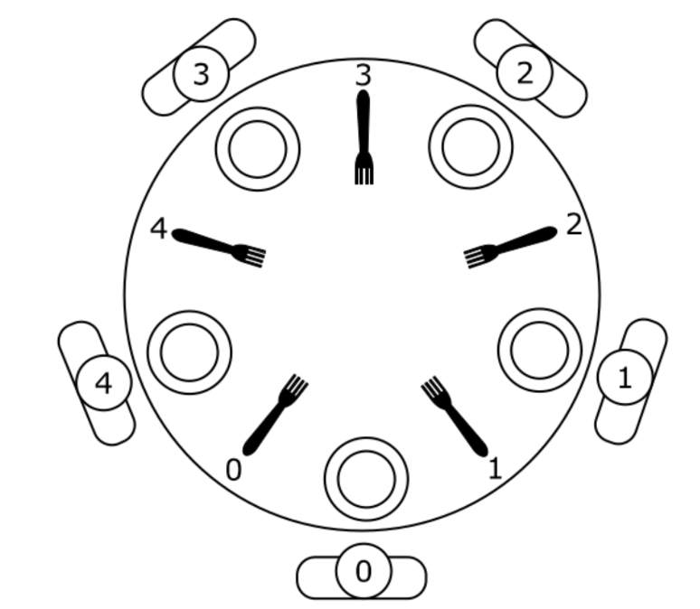
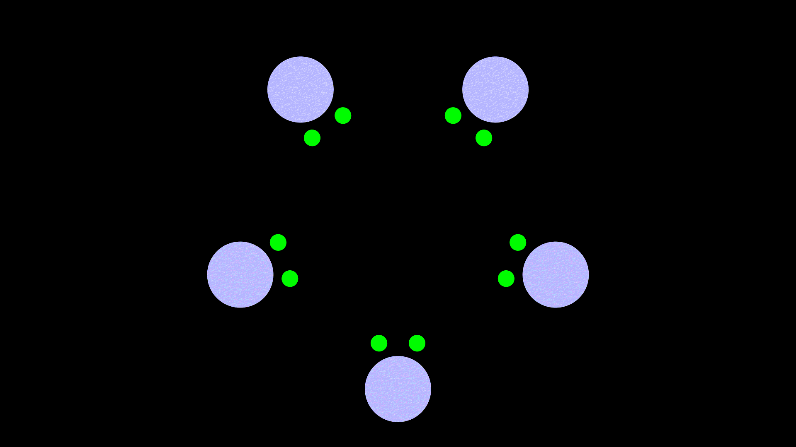
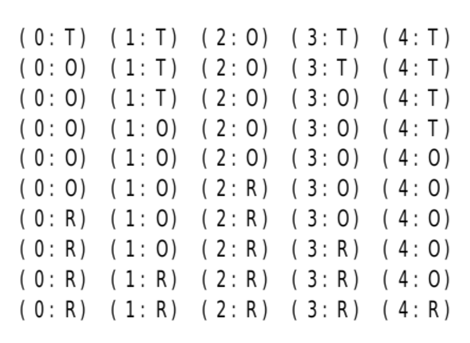
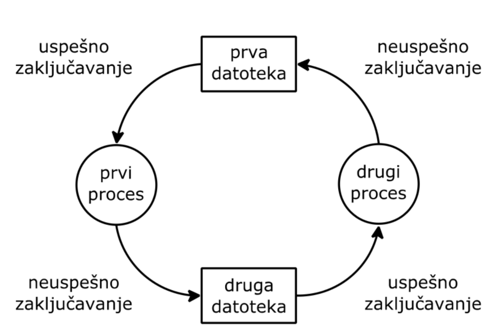

Veljko Petrović
Mart, 2024


thread_philosopher().THINKING_PERIOD.EATING_PERIOD.take_fork() i release_fork() klase
Dining_table.take_fork() i release_fork()
klase Dining_table, dopuštaju pojavu mrtve petlje.MEANTIME.fork_available deljene klase
Dining_table omogućuje očekivanje ispunjenja uslova da je
viljuška raspoloživa, kao i objavljivanje ispunjenosti ovog uslova.Dining_table sadrži i polja
philosopher_state i fork_state.THINKING,
WAITING_LEFT_FORK, HOLDING_ONE_FORK,
WAITING_RIGHT_FORK, EATING), a drugo stanja
viljuški (FREE, BUSY).show() klase Dining_table
omogućuje prikazivanje svake promene stanja filozofa.mod5() podržava modulo aritmetiku.main() se kreiraju niti filozofi, a zatim se
sačeka kraj njihove aktivnosti.Dining_table::take_identity()): 0, 1, 2, 3 i 4 koji
omogućuje razlikovanje filozofa.#include<thread>
#include<iostream>
using namespace std;
using namespace chrono;
using namespace this_thread;
int mod5(int a)
{
return (a > 4 ? 0 : a);
}
enum Philosopher_state {THINKING = 'T',
WAITING_LEFT_FORK = 'L',
HOLDING_ONE_FORK = 'O',
WAITING_RIGHT_FORK = 'R',
EATING = 'E'};
enum Fork_state {FREE, BUSY};class Dining_table {
mutex mx;
int philosopher_identity;
Philosopher_state philosopher_state[5];
Fork_state fork_state[5];
condition_variable fork_available[5];
void show();
public:
Dining_table();
int take_identity();
void take_fork(int fork, int philosopher, Philosopher_state waiting_state,
Philosopher_state next_state);
void release_fork(int fork, int philosopher, Philosopher_state next_state);
};Dining_table::Dining_table(){
philosopher_identity=0;
for(int i = 0; i < 5; i++) {
philosopher_state[i] = THINKING;
fork_state[i] = FREE;
}
}
void Dining_table::show(){
for(int i = 0; i < 5; i++) {
cout << '(' << (char)(i+'0') << ':'
<< (char)philosopher_state[i] << ") ";
}
cout << endl;
}
int Dining_table::take_identity(){
unique_lock<mutex> lock(mx);
return philosopher_identity++;
}void Dining_table::take_fork(int fork, int philosopher,
Philosopher_state waiting_state,
Philosopher_state next_state){
unique_lock<mutex> lock(mx);
if(fork_state[fork] == BUSY) {
philosopher_state[philosopher] = waiting_state;
show();
do {fork_available[fork].wait(lock);}while(fork_state[fork] == BUSY);
}
fork_state[fork] = BUSY;
philosopher_state[philosopher] = next_state;
show();
}
void Dining_table::release_fork(int fork, int philosopher,
Philosopher_state next_state){
unique_lock<mutex> lock(mx);
fork_state[fork] = FREE;
philosopher_state[philosopher] = next_state;
show();
fork_available[fork].notify_one();
}Dining_table dining_table;
const milliseconds THINKING_PERIOD(10);
const milliseconds MEANTIME(5);
const milliseconds EATING_PERIOD(10);
void thread_philosopher(){
int philosopher = dining_table.take_identity();
int fork = philosopher;
for(;;) {
sleep_for(THINKING_PERIOD);
dining_table.take_fork(fork, philosopher,
WAITING_LEFT_FORK, HOLDING_ONE_FORK);
sleep_for(MEANTIME);
dining_table.take_fork(mod5(fork+1), philosopher,
WAITING_RIGHT_FORK, EATING);
sleep_for(EATING_PERIOD);
dining_table.release_fork(fork, philosopher, HOLDING_ONE_FORK);
sleep_for(MEANTIME);
dining_table.release_fork(mod5(fork+1), philosopher, THINKING);
}
}int main(){
cout << endl << "DINING PHILOSOPHERS" << endl;
thread philosopher0(thread_philosopher);
thread philosopher1(thread_philosopher);
thread philosopher2(thread_philosopher);
thread philosopher3(thread_philosopher);
thread philosopher4(thread_philosopher);
philosopher0.join();
philosopher1.join();
philosopher2.join();
philosopher3.join();
philosopher4.join();
}
.wait) koristimo čekanje sa
wait_for ili wait_until što omogućava da se
čeka do ispunjenja uslova ili dok ne istakne neko vreme.
#include<thread>
#include<iostream>
using namespace std;
using namespace chrono;
using namespace this_thread;
const unsigned ACCOUNTS_NUMBER = 10;
const int INITIAL_AMOUNT = 100;
class Bank {
mutex mx;
int accounts[ACCOUNTS_NUMBER];
short readers_number;
short writers_number;
short readers_delayed_number;
short writers_delayed_number;
condition_variable readers_q;
condition_variable writers_q; void show();
void reader_begin();
void reader_end();
void writer_begin();
void writer_end();
public:
Bank();
void audit();
void transaction(unsigned source, unsigned destination);
};
Bank::Bank(){
for(unsigned i = 0; i < ACCOUNTS_NUMBER; i++)
accounts[i] = INITIAL_AMOUNT;
readers_number = 0;
writers_number = 0;
readers_delayed_number = 0;
writers_delayed_number = 0;
}void Bank::show(){
cout << "RN: " << readers_number << " RDN: "
<< readers_delayed_number << " WN: "
<< writers_number << " WDN: "
<< writers_delayed_number << endl;
}
void Bank::reader_begin(){
unique_lock<mutex> lock(mx);
if((writers_number > 0) || (writers_delayed_number > 0){
readers_delayed_number++;
show();
do { readers_q.wait(lock); }
while((writers_number > 0) ||
(writers_delayed_number > 0));
} readers_number++;
show();
if(readers_delayed_number > 0){
readers_delayed_number--;
show();
readers_q.notify_one();
}
}
void Bank::reader_end(){
unique_lock<mutex> lock(mx);
readers_number--;
show();
if((readers_number == 0) && (writers_delayed_number > 0)){
writers_delayed_number--;
show();
writers_q.notify_one();
}
}const milliseconds WRITING_PERIOD(1);
void Bank::transaction(unsigned source,unsigned destination){
int amount;
writer_begin();
sleep_for(WRITING_PERIOD);
amount = accounts[source];
accounts[source] -= amount;
accounts[destination] += amount;
writer_end();
}
Bank bank;
void thread_reader(){
bank.audit();
}const milliseconds READING_PERIOD(1);
void Bank::audit(){
int sum = 0;
reader_begin();
sleep_for(READING_PERIOD);
for(unsigned i = 0; i < ACCOUNTS_NUMBER; i++)
sum += accounts[i];
reader_end();
if(sum != ACCOUNTS_NUMBER*INITIAL_AMOUNT) {
unique_lock<mutex> lock(mx);
cout << " audit error " << endl;
}
}const milliseconds WRITING_PERIOD(1);
void Bank::transaction(unsigned source,unsigned destination){
int amount;
writer_begin();
sleep_for(WRITING_PERIOD);
amount = accounts[source];
accounts[source] -= amount;
accounts[destination] += amount;
writer_end();
}
Bank bank;
void thread_reader(){
bank.audit();
}void thread_writer0to1(){
bank.transaction(0, 1);
}
void thread_writer1to0(){
bank.transaction(1, 0);
}
int main(){
cout << endl << "READERS AND WRITERS" << endl;
thread reader0(thread_reader);
thread reader1(thread_reader);
thread writer0(thread_writer0to1);
thread reader2(thread_reader);
thread writer1(thread_writer1to0);
reader0.join();
reader1.join();
writer0.join();
reader2.join();
writer1.join();
}wait pre dovođenja u konzistentno stanjeclass Activity {
mutex mx_activity;
condition_variable activity_permission;
public:
void stop();
void start();
};
void Activity::stop(){
unique_lock<mutex> lock(mx_activity);
activity_permission.wait(lock);
}
void Activity::start(){
unique_lock<mutex> lock(mx_activity);
activity_permission.notify_one();
}class Manager {
mutex mx_manager;
Activity activity;
public:
void disable_activity();
void enable_activity();
};
void Manager::disable_activity(){
unique_lock<mutex> lock(mx_manager);
activity.stop();
}
void Manager::enable_activity(){
unique_lock<mutex> lock(mx_manager);
activity.start();
}
Manager manager;sleep_for().